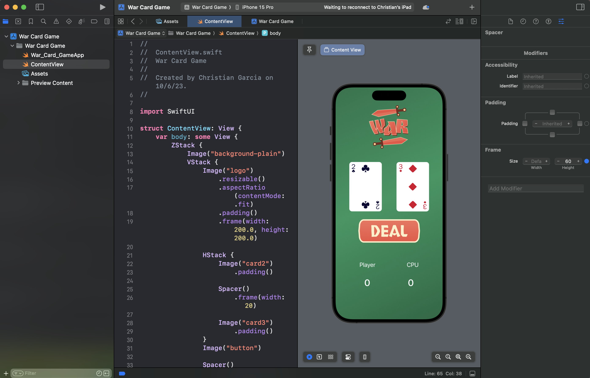

My Favorite Recipe
This project showcases my favorite recipe, combining my passion for cooking with my journey into web development. Designed to deepen my understanding of HTML and CSS, this site features four distinct HTML pages and a comprehensive CSS file to style the content. The project emphasizes the use of various HTML tags, forms, buttons, divs, CSS animations, and flexbox to create a visually appealing and functional user experience.
This Page Includes
- Index Page: Featuring a fade-in effect with centered content.
- Ingredients Page: Sliding in with a left-bound orientation to display essential ingredients.
- Directions
- Form Page
Additionally, I made the project fully responsive, ensuring it looks great and functions well on devices of all sizes, from desktops to smartphones. This project represents my commitment to learning and growing as a web developer, using hands-on practice to master the foundational skills of HTML, CSS, and responsive design.
War Card Game App
The War card game app is a modern rendition of the classic card game, developed using Swift. This project, guided by Chris Codes' YouTube tutorial, served as a practical introduction to Swift programming and user interface design.
Key features
- Swift Functions: Implemented core game mechanics such as card comparisons, shuffling, and determining the winner of each round using Swift functions.
- User Interface: Designed a clean, interactive UI that is both visually appealing and user-friendly on iOS devices.
- Game Mechanics: Adhered to the traditional rules of the War card game, ensuring an engaging and nostalgic gaming experience.
Additionally, I made the project fully responsive, ensuring it looks great and functions well on devices of all sizes, from desktops to smartphones. This project represents my commitment to learning and growing as a web developer, using hands-on practice to master the foundational skills of HTML, CSS, and responsive design.
3D Grapher in Python
The 3D Grapher project is a Python application designed to visualize mathematical functions and data in three dimensions. Created to deepen my understanding of essential Python libraries, this project leverages Plotly, NumPy, and Matplotlib to deliver interactive and dynamic visualizations.
This Page Includes
- 3D Plotting: Utilized Plotly to create interactive 3D plots, allowing for detailed exploration of complex data and functions.
- Mathematical Visualizatoin: Supported the visualization of various mathematical functions and equations in a three-dimensional space.
- User Interface: Developed an intuitive interface for inputting functions and adjusting plot parameters, enhancing user experience.
This project not only solidified my Python programming skills but also provided valuable insights into data visualization techniques and the practical application of libraries like Plotly, NumPy, and Matplotlib.